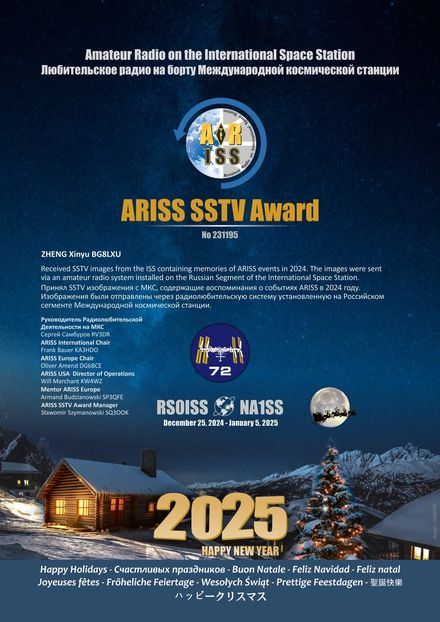

ARISS SSTV Award No. 231195
接收来自国际空间站的 SSTV 图像，内容记录了 2024 年 ARISS 活动的回忆； 图像经由安装在国际空间站俄罗斯段的业余无线电系统发送。
Received SSTV images from the ISS containing memories of ARISS events in 2024. The images were sent via an amateur radio system installed on the Russian Segment of the ISS.

